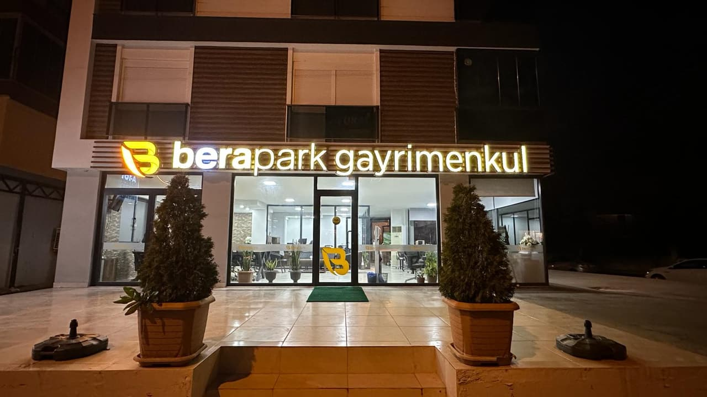
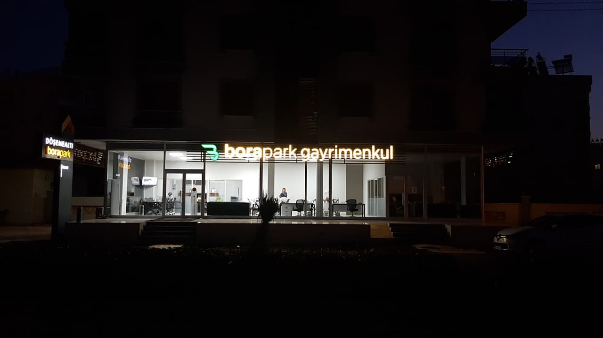
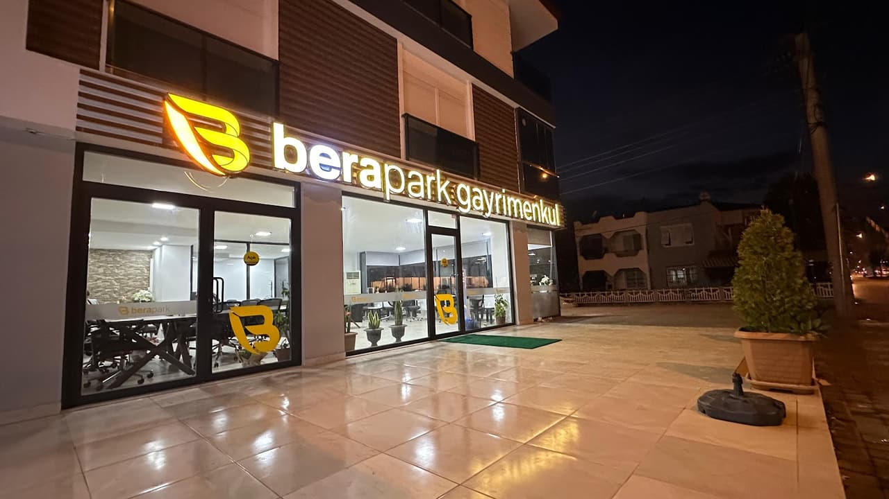

Berapark için iş geliştirme planı
Biz yalnızca site yapmıyoruz: sektörünüzde işinizi büyütmek için ne gerekiyorsa onda yanınızdayız. Aşağıda size özel büyüme planı var; planın hediyesi olarak Google'daki gerçek bilgileriniz ve fotoğraflarınızla 3 web sitesi tasarımı da çalışır hâlde hazır.
Büyüme planınız
Türkçe/İngilizce portföy, vatandaşlık ve kira getirisi hesabıyla yurt dışından doğrudan talep.
Mülk sahibine "evim ne eder?" değerleme formu; satılık/kiralık ilan sahipleri size gelir.
İlçe ve mahalle aramalarında Google profiliniz ve yorumlarınızla öne çıkma.
WhatsApp asistanı ve müşteri listesiyle yeni ilanı ilgilenen herkese otomatik duyurma.
Hediye: 3 web sitesi tasarımı, hepsi çalışır hâlde

Vitrin yerleşimi: büyük fotoğraf ve kemer çerçeve
Canlı aç →
Tam ekran arka planlı, koyu ve iddialı
Canlı aç →
Uygulama yerleşimi: kartlar, açılır paneller, alt menü
Canlı aç →- Yatırımla vatandaşlık hesaplayıcı: mülk bedeli 400.000 $ eşiğine göre eksik tutar ve süreç
- Kira getirisi hesaplayıcı: fiyat ve kiraya göre yıllık getiri ve amorti süresi
- Türkçe / İngilizce dil düğmesi; yabancı yatırımcıya hazır
- Google'daki fotoğraflarınız, çalışma saatleriniz ve 360° konum